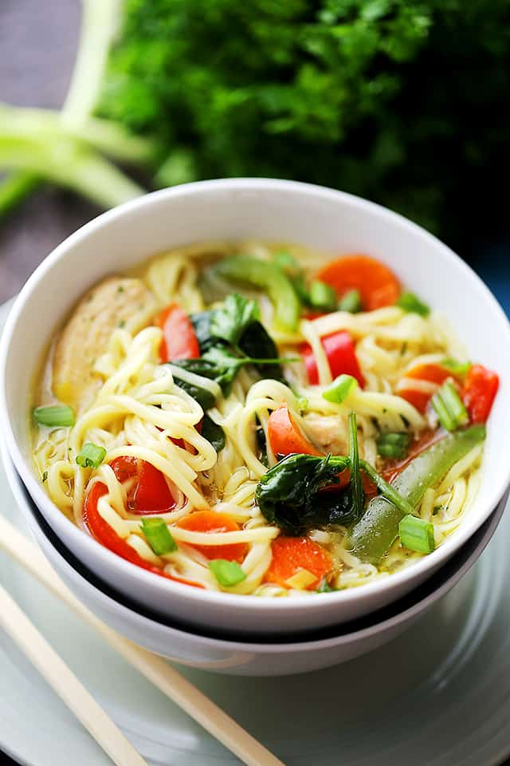

Vietnamese Noodle Soup

A family favorite recipe! Now I am not Vietnamese, but this IS a family favorite.
Not of my family mind you, but of some family somewhere... probably.
We're trying to be a bit more worldy so we're making dishes
from around the world. And then significantly changing something
inherently fundamental about the dish as a sign of respect
for the culture... as you do.
Ingredient List
- 3 cups of organic reduced sodium chicken stock
- 1 minced clove of Garlic
- 1 tsp minced Ginger
- 1/4 tsp cardamom
- 7oz bag of Shirataki Noodles
- 1 sliced chicken breast, about the size you'd find
them cut at an Asian restaurant (go figure)
- 1 cup of bean sprouts
- 2 scallions, sliced 1/4 inch
- 1 tsp chili sauce (optional, if you're a punk)
- 1/2 lime, cut in half
- 1/4 cup chopped cilantro (if you're into that soapy taste)
- 1/3 cup of your preference mushroom
- 1 thinly sliced chili pepper
Steps to cook dish:
- Bring small pot of water to a boil.
In a 3 quart saucepan, bring chicken stock to a boil over medium-high heat.
Add in the farlic, ginger and cardamom then let simmer for 10 mins.
-
Drain the water from the Shirataki noodle package, rinse the noodles in cool water.
-
Then place the shirataki noodles into the boiling pot of water for 2 minutes.
-
Put noodles into dry pan on medium heat until dry, then place in large bowl.
-
Add the chicken breast to the simmering stock until thoroughly cooked. Aprox 5-10 mins.
-
Pour the chicken and stock pan into the bowl with the noodles, then add mushrooms,
bean sprouts, chili sauce, chili pepper, cilantro, and slice of lime.